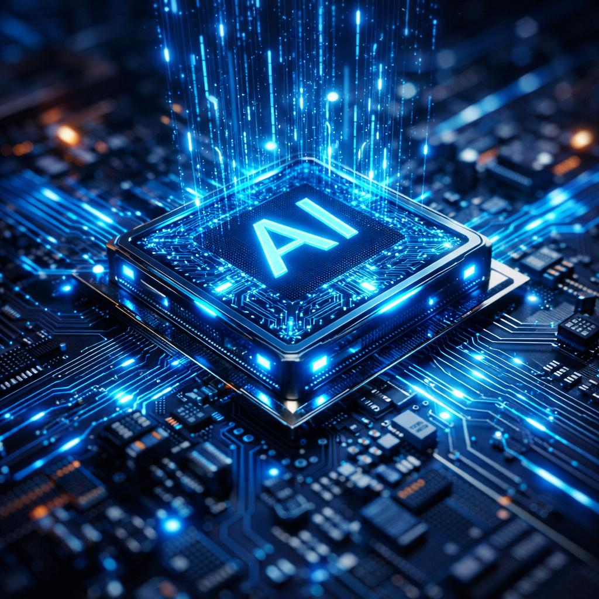

Що таке штучний інтелект?

Штучний інтелект (ШІ) — це напрям у галузі інформаційних технологій, який дає змогу комп’ютерам виконувати завдання, що зазвичай потребують участі людини. До таких завдань належать аналіз інформації, розпізнавання зображень і мовлення, пошук закономірностей та прийняття рішень. Сучасні системи ШІ можуть навчатися на великих обсягах даних і покращувати результати своєї роботи.
Одним із найважливіших напрямів розвитку ШІ є машинне навчання, під час якого алгоритми знаходять закономірності в даних.
Раніше комп’ютерні програми часто виконували лише наперед задані команди, а сучасні системи можуть аналізувати дані та адаптувати свої результати.
Штучний інтелект продовжує активно розвиватися.
Сфери застосування штучного інтелекту
Сьогодні штучний інтелект використовується в багатьох сферах життя та поступово стає важливою частиною сучасних технологій. Він допомагає людям швидше обробляти великі обсяги інформації, знаходити закономірності, прогнозувати результати та виконувати складні завдання. Завдяки розвитку ШІ багато процесів можна автоматизувати, що дозволяє економити час і підвищувати ефективність роботи. Особливо активно ці технології використовуються там, де необхідно аналізувати велику кількість даних або швидко знаходити потрібну інформацію.
Застосування штучного інтелекту охоплює як професійну діяльність, так і повсякденне життя. Наприклад, сучасні системи можуть допомагати лікарям аналізувати медичні зображення, студентам — отримувати додаткові навчальні матеріали, а водіям — будувати оптимальні маршрути. Основні сфери використання ШІ включають:
- Медицина — аналіз медичних зображень та допомога в діагностиці.
- Освіта — персоналізоване навчання та допомога студентам.
- Транспорт — навігація та розвиток автономних транспортних засобів.
- Фінанси — аналіз даних та виявлення підозрілих операцій.
- Медіа — створення та обробка текстів, зображень і відео.